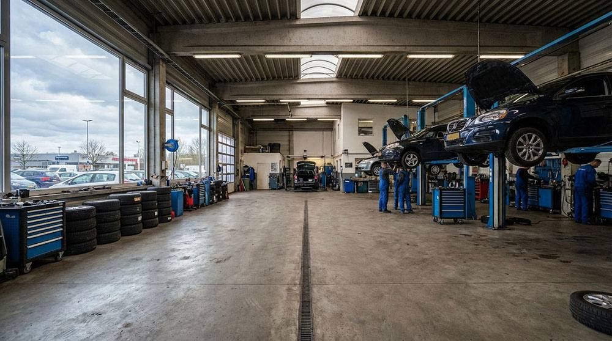

Fix clunks, rattles, and steering play for a smoother, safer ride.
Our 24/7 front desk takes your request now — no waiting for a call back. También en español.
Tell us your vehicle and what's going on (photo optional): you get a summary and the shop gets it right away. Díganos su vehículo y qué le pasa: el taller lo recibe al instante.
📅 Book appointment · Pedir cita❄️ A/C not cooling? · ¿El A/C no enfría?📲 Call me back · Que me llamenDemo: this replaces the original «Book Appointment» form, which only asked for a call back. Demo: reemplaza el formulario «Book Appointment» original, que solo pedía que lo llamen. Nada se envía.Houston’s potholes, speed bumps, and rough roads take a heavy toll. If you notice any of these, your front end needs attention.
A knock or clunk when hitting bumps or turning often indicates worn ball joints, tie rod ends, or sway bar links.
If the steering feels vague, requires constant correction, or has excessive play, worn tie rods or a failing steering rack are likely causes.
Pulling while driving straight can be caused by worn suspension components, uneven tire wear, or alignment issues from failed parts.
Inside-edge, outside-edge, or cupping-pattern tire wear is a clear sign of worn ball joints, tie rods, or struts affecting alignment.
If the vehicle bounces excessively after bumps or feels like it’s floating, the shocks or struts have lost their damping ability.
Popping, clicking, or groaning during turns can indicate worn CV joints, strut mounts, or power steering pump issues.
If your vehicle is pulling to one side, you hear clunking over bumps, or the steering feels loose and wandering, your suspension or steering components likely need attention. At Ruben's Auto Repair & A/C Service in Houston, TX, we diagnose and repair front-end and suspension problems that affect your ride quality, tire wear, and — most importantly — your safety.
Houston's roads are tough on suspension systems. Potholes, rough pavement, and speed bumps take a toll on shocks, struts, ball joints, tie rods, and control arms. Worn components don't just make the ride uncomfortable — they reduce your ability to steer and stop effectively, especially in emergency situations.
We perform thorough front-end inspections to identify every worn or damaged part. Whether you need a single tie rod end replaced or a full set of struts, we’ll explain the findings, quote the repair, and get you back to driving with confidence on Houston streets.
Every front-end and undercarriage component — inspected, diagnosed, and repaired to restore safe handling.
Hands-on inspection of every suspension and steering component. We check for play, wear, leaks, and damage top to bottom.
Worn shocks cause bouncing, poor handling, and increased stopping distance. We replace them to restore factory ride quality.
Complete strut assembly replacement including spring, mount, and bearing. Restores ride height, handling, and tire alignment.
Upper and lower ball joints. A failed ball joint can cause wheel separation — we test with loaded and unloaded methods.
Inner and outer tie rod ends. Worn tie rods cause loose steering and accelerate tire wear. Alignment recommended after replacement.
Cracked or worn control arm bushings cause clunking and alignment drift. We replace bushings or the full arm assembly as needed.
Humming, growling, or grinding noise that changes with speed? We diagnose and replace worn wheel bearings and hub assemblies.
Clicking during turns or torn CV boots mean the joint is failing. We replace axle shafts and individual CV joints.
Pump replacement, rack and pinion repair, hose replacement, and fluid flush for power steering systems.
Rattling or clunking in turns is often worn sway bar links or bushings. A quick, affordable fix that makes a big difference.
Three decades of front-end work on every make and model that drives Houston’s rough roads. We’ve seen it all.
We check every component — not just the obvious ones. Worn parts that seem minor can cause expensive tire wear and unsafe handling.
We prioritize safety-critical repairs and tell you honestly what can wait. Ball joints and tie rods first; comfort items second.
We use quality replacement parts that restore factory ride and handling characteristics. No cheap parts that wear out in six months.
Servicio completo en español. Si su carro truena, jala, o el volante tiembla, tráigalo con confianza.
Located on Aldine Bender Rd, serving Aldine, Greenspoint, Humble, Spring, and all of North Houston.
Signs include excessive bouncing after bumps, the vehicle nose-diving when braking, body roll in turns, or a generally floaty ride. A simple bounce test (push down on a corner and release) can indicate wear — the car should settle in one bounce. If it keeps bouncing, the dampers are worn.
The most common causes are worn sway bar links, ball joints, tie rod ends, or strut mounts. These are pivot points that wear with time and mileage. We inspect all of them during a front-end check to find the source.
Yes, in most cases. Replacing tie rods, struts, ball joints, or control arms changes suspension geometry. We recommend an alignment after these repairs to prevent uneven tire wear and ensure straight tracking.
It depends on the vehicle and whether it’s an upper or lower ball joint (or both). Some vehicles use press-in joints that require special tooling; others use bolt-on assemblies. We’ll inspect and give you an exact quote. Call (832) 607-0968.
No. A severely worn ball joint can separate, causing complete loss of steering control and wheel detachment. If we find a ball joint with excessive play, we’ll flag it as safety-critical and recommend immediate replacement.
Uneven tire wear is almost always caused by worn suspension components or misalignment. Inside-edge wear often points to worn tie rods or negative camber from ball joints. We identify the worn parts, replace them, and recommend alignment to protect your new tires.
R-134a & 1234yf recharge, compressor & leak repair
Learn MoreRadiator, thermostat & overheating repairs
Learn MorePads, rotors, calipers & ABS service
Learn MoreDiagnostic scans & drivability issues
Learn MoreOil changes, filters & scheduled service
Learn More